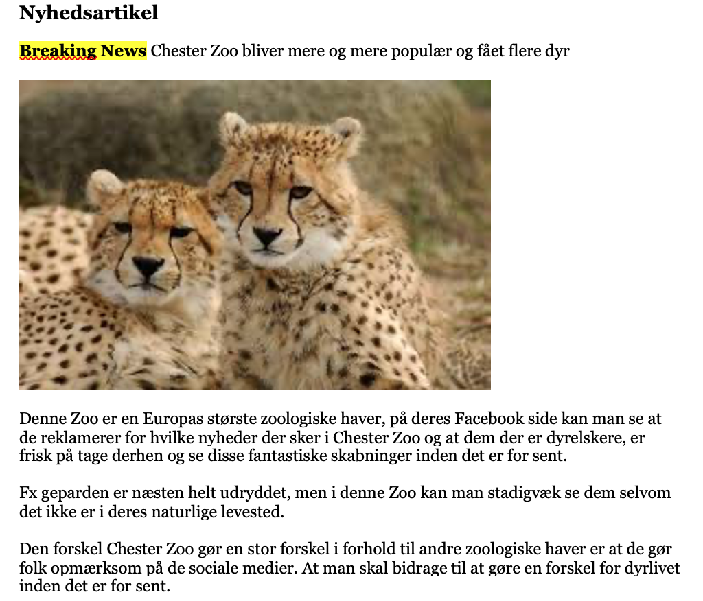
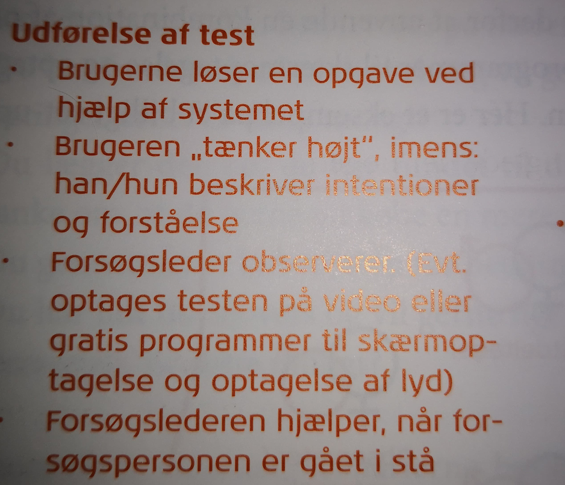
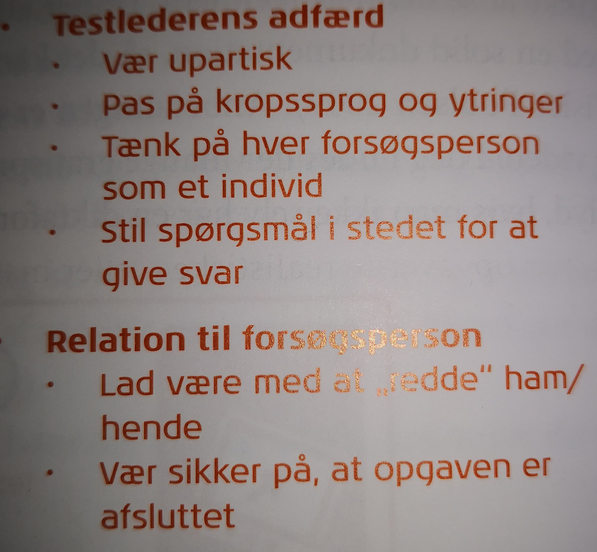
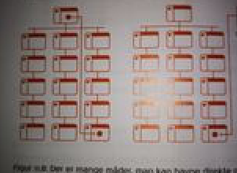
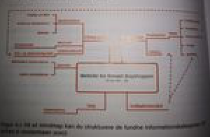
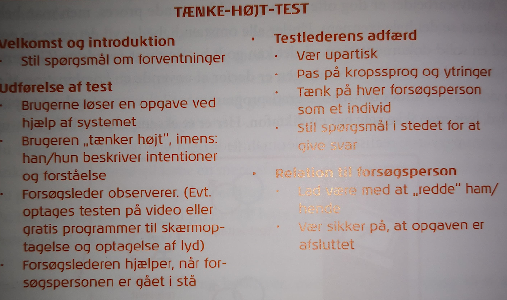

Brugertest.
Det man bruger en brugertest til, er at man involverer brugeren og denne test er den mest anerkendte usabilitymetode, i det at en ekspertmetode ikke vil kunne give de samme resultater. Formålet med denne test, er at tjekke om at den udvalgte bruger kan anvende det degitale produkt, og at kunne finde det de ønsker uden at stoppe op og tænke over hvad de skal gøre. Desuden giver brugertesten en god indsigt i, hvordan brugeren tænker og oplever et design.
Det en brugertest går ud på er at få brugeren til at løse en række relevante og realistiske opgaver
Når man aflutter en test, skal den data man har fået insamlet anlyseres, derefter skal man identificere og klassificere problemerne, for så at kunne udarbejde ænfringsforhold og testrapport. I gennem tiden er brugertest blevet anset for at være meget ressourcekrævende, på grund af det kræver professionelle testledere og speciel indrettede laborationer og samt en række testdeltagere.
Dette er om informationsarkitektur.
Formålet med informationsarkitektur er for at websites er opbygget efter et hierarki af menuer og indholdssider, og dette føles naturlig for brugerne og at det ikke er med til at vildlede dem eller at de bliver forstyrret af deres brug af websitet. Når man konfronterer brugerne med et nyt og komplekst informationssystem, så er det med til at opbygge deres egne mentale modeller eller forestillinger om hvordan en side skal virke. Det er også igennem design af informationsarkitektur at der skal sikres at et digtalt produkt bliver brugbart som muligt. I litteraturen findes flere forskellige definitioner af hvad informationsarkitektur går ud på.
Dette er med til at danne et grundlag for interfacedesign, navigationsdesign og informationsdesign. Til sidst bliver der lavet det grafiske design.
Inden man kan gå i gang med at få informationer, kan blive strukturet med at gennemføre en slags for brainstorm, det er med til at give deltagerne mulighed for at skrive nogle forslag til overskrifterne, ved at skrive det på post-it-sedler. Derefter diskutere man de forslag der er kommet op på væggen og laver en sortering, det kan ske ved at man laver nogle forskellige hovedkategorier, hvorefter man flytter rundt på dem og kombinere dem med hinanden, så de kommer ind i mindre kategorier. Man kan også anvende en mind-map, som fungere på samme måde, hvor man skriver noget i midten som har noget af gøre med det emne man har valgt, og derefter laver man pile ud fra det der står i midten.
Teksproduktion.
Dette er link til tekstproduktion i praksis. Tekstproduktion

Det tekstproduktion går ud på, fx som studerende inden for multimediedesigner, så er det en god idé at man øver sig i at skrive tekst, hvor man selv finder på noget at skrive om, eller man får inspiration fra andre tekstproduktioner.
Før man går i gang med at kaste sig ud med at gå i gang med produktion af tekster, så er det en god idé at få nogle journalistiske grundbegreber på plads.
Her er lidt om hvad nyhedskriterierne betyder for om hvordan man kan producere en god tekst. Så der starter man med væsentlighed, derefter er sensation, konflikt, identifikation og aktualitet. Før man kan kende målgruppen, så er det nødvendigt vurdere nyhedskriterierne.

Disse to billeder kan man bedre læse om hvad tænk-høj-test går ud på, end man kan på det første billede.


Her kan man få en god idé om hvordan man kan bruge disse to former for opdeling af, hvis man gerne vil have noget information omkring nogle bestemte kategorier.

Man man også bruge noget der hedder kortsortering, dette er en teknik hvor der både bliver anvendt design og evaluering af websites indhold. Den klassiske kortsortering er hvor man skriver navne på disse indholdskategorier ned på kort, derefter er det op til teammedlemmerne eller brugere at blive bedt om at sortere disse kort og arrangere på en måde de syens det skal se ud
Mere om hvad kriterierne står for og bruges til.
Disse kriterier har også en afsendervinkel, hvilket kommer an på hvilken afdeling man sidder i. Her stiller modtageren så nogle omvendte og specifikke krav, som kommer an på den spdcifikke afsender. For eksempel hvis der er en nyhed om en eller anden kendt person, det vil så blive vægtet forskellig, eftersom det kommer an på hvilken redaktion eller stofområde denne person beskræftiger sig med.
Artikel, her kan man fx bruge nogle af kriterierne, hvilket kommer an på hvor oplysende artiklen skal være.
Den første er nyhedsartiklen, det kan fx være en avis og som regel vil man gerne have en god overskrift når man åbner den. Derudover er der en resume, som siger præcis hvad og hvem denne artikel handler om. I denne sammenhæng kan man benytter sig af nyhedstrekanten, som repræsenterer en måde at strukture indholdet, fx længere tilbage på de trykte aviser blev de sat op ved at lægge hver enkelte bogstav i en kasse.
Den næste er den subjektibe artikel, her bliver der ofte brugt en anden form for struktur, kaldet kommuden. Denner er med til at give læseren en mulighed for at kunne udvælge noget præcist og dermed ikke læse alt.
Som testperson så er det vigtigt at blive informeret i forbindelse af introduktionen og blive orienteret om hvad testen går ud på, hvad der kommer til at ske med testdata, samt konkret hvad der skal ske. Derefter er en god idé at få en afklaring af hvad testpersonen, når hun/han ser produktet, at de har en idé om hvad det tilbyder og samt hvem afsenderen er.

Dette er om navigationsdesign.
Navigationstruktur, dette design er i grad dikteret af havd der skal være af indhold som skal navigeres i og hvordan det er blevet strukturet. På et website så er navigationen ofte blevet designet sådan, at den er med til at gengive indholdets hierarkiske struktur således at det er forholdsvis præcist. Ofte bliver interface suppleret med alternative navigationsformer, som er med til at give brugerne en mulighed for at kunne springe i websitets indhold efter eget ønske, så det er nemmere at kunne finde frem til det de leder efter.
Et navigation er ofte blevet designet på en måde, hvor den som udgangspunkt bliver understøttet af én af følgende tre struktur typer, lineær struktur, hierarkiske struktur og kontekstafhængig struktur.
Den linær struktur.
Dette er den simpleste måde at organisere information på da man som bruger navigerer lineært gennem indholdet fra fx bøger. Denne form er oplagt hvis det er af afgørende betydning om hvordan indholdet bliver præsenteret efter en bestemt rækkefølge.
Den hierarkiske struktur.
Her er indholdet mere komplekst, hvilket også give mening at man designer en navigation ud fra en meget tydelig hierarkisk struktur. Det er også afgørende at indholdet bliver grupperet i sektioner for at navigationen er fornuftig, det er med til at brugeren hurtigt kan danne sig et billede af hvad de forskellige kategorier indeholder. Dog så er der jo altid en grænse for hvor opfattende et hierarki kan være, hvis det skal kunne visualiseres på et overskuelige måde, dette kan ske hvis brugeren mister orienteringen.
Kontekstafhængig struktur.
Denne struktur er ikke baseret på den hierarkiske struktur, men en relation mellem forskellige forhold. Det kan eksempelvis være Wikipedias website, det er hvor sidderne er linket til hinanden, det er så disse links på kryds og tværs, som er navigationen. Åbenbart har Wikipadia valgt denne form for navigation i at det ikke kan lade sig gøre hierarkisk at visualisere websitets enorme indholdsarkiv.